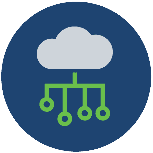

Smart devices

Considera la frequenza con cui utilizzi i tuoi dispositivi informatici per accedere ai tuoi dati personali. A meno che tu non abbia scelto di ricevere estratti conto cartacei, probabilmente accedi alle copie digitali degli estratti conto bancari tramite il sito web della tua banca. E quando paghi una bolletta, è molto probabile che tu abbia trasferito i fondi richiesti tramite un'app di mobile banking.
Oltre a consentirti l’accesso alle informazioni, i dispositivi informatici possono anche generare informazioni su di te.
Le tecnologie indossabili come gli smartwatch e i tracker di attività raccolgono i tuoi dati per la ricerca clinica, il monitoraggio della salute dei pazienti e il monitoraggio della forma fisica e del benessere. Con la crescita del mercato globale dei fitness tracker, aumenta anche il rischio per i tuoi dati personali.